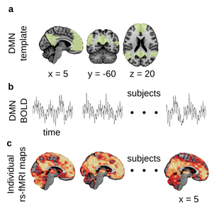

Resting-state Functional MRI (rsfMRI)¶
Synaptic dysfunction has long been hypothesized to be an early event in AD degeneration, and is likely to be reflected in fMRI connectivity. To derive a functional connectivity map, one needs to specify an anatomical location, or use some data driven technique such as a bootstrap analysis of stable clusters (BASC) (Bellec et al. 2010) to generate a group template of resting-state networks, here the DMN (panel a). Average time series within the target region/network are derived from a series of individual datasets (panel b), and correlated with the time series of all voxels across the brain, resulting into individual fc-maps (panel c). Promising results were first reported in the literature on cross-sectional comparisons of fc-maps between patients with AD dementia and cognitively normal (CN) elderly subjects (e.g. REFS), as well a comparisons of patients with MCI of the amnestic type and CN (e.g. ). Although most published studies feature low sample size, two recent meta-analysis from my group, one combining imaging data of N=255 in CN and MCI participants across four studies (Tam et al. 2015), and another one combining published coordinates from 34 published studies, including N=1363 individuals, point to a consistent dysconnectivity in regions of the default-mode network, as well as alterations in limbic and fronto-parietal networks. In addition to these clinical comparisons, several studies have reported differences in resting-state connectivity between amyloid beta positive vs negative CN elderly subjects, e.g. (Sheline et al. 2010), as well as differences between CN participants with and without a family history of AD. Overall, despite still being in its infancy, there is solid evidence at this stage in the literature that rs-fMRI is an early, sensitive marker of the progression of AD (Vemuri, Jones, and Jack 2012).
{kind=link}
NIAK Pipeline¶
NIAK1 is a collection of workflows implemented in the Pipeline System for Octave and Matlab (PSOM) (Bellec et al. 2012). It performs structural MRI (s-MRI) and resting-state fMRI (rs-fMRI) processing using a combination of generic medical image processing modules, the MINC tools2, and custom Matlab/Octave scripts. NIAK is distributed as an open-source software under MIT license and the code is available on NITRC3 and Github4.
The CCNA dataset will be processed using NIAK version x.x.x.x, running on a server of the Canadian Brain Imaging Research Platform (CBRAIN) (Sherif et al. 2014). Processing scripts will be made available on github. The log files for execution will be included with the derivatives and can be accessed through the PSOM interface5.
Structural processing¶
NIAK implements a variant of the CIVET pipeline (ref). In brief, each individual s-MRI scan will initially be corrected for intensity non-uniformities (Sled, Zijdenbos, and Evans 1998) and the brain extracted using a region growing algorithm (Park and Lee 2009). Individual scans will then then linearly registered (9 parameters) with the T1 MNI symmetric template (Fonov et al. 2011), restricted to the brain with the previous mask.
Note
Our choice of a symmetric template makes it possible to study functional connectivity between homotopic regions by simply flipping the x axis in stereotaxic space.
The s-MRI scans will then be corrected for intensity non-uniformities in stereotaxic space, this time restricted to the template brain mask. An individual brain mask will be extracted a second time on this improved image (Park and Lee 2009) and combined with template priors. An iterative nonlinear registration will be estimated between the linearly registered s-MRI and the template space, restricted to the brain mask (Collins et al. 1994). A final brain mask of the T1 image in native space will be extracted from the template brain mask by inverting the linear and non-linear transformation. This final mask will be used for registration between rs-fMRI and sMRI data.
s-MRI outputs will include:
non-uniformity corrected T1 volumes in native and stereotaxic space (after linear or non-linear transformations) at 1 mm isotropic resolution
brain masks in all spaces, in compressed NIFTI format (.nii.gz)
linear transformations from native to template space, as .xfm MINC files
non-linear transformations from native to template space, as .xfm MINC files
Functional processing¶
Preprocessing¶
The NIAK rs-fMRI pipeline comprises of (a) removal of the first three volumes to allow for magnetization to reach equilibrium, (b) site-specific slice timing correction to the middle slice, and (c) estimation of the parameters of a rigid-body motion between each time frame and the median volume of a run, followed by spatial resampling across frames. The fMRI time series are then corrected for slow time drifts (high-pass filter with a 0.01 Hz cut-off, using a discrete cosines transform) and physiological noise using an automated labeling of noise components in an individual independent component analysis (ICA) (Perlbarg et al. 2007). Finally, the median volume of one selected fMRI run for each subject is coregistered (restricted to the brain) with the corresponding s-MRI scan using Minctracc (Collins et al. 1994). The rs-fMRI to s-MRI transform and s-MRI to template (non-linear) transform are combined to resample the rsfMRI volumes into MNI space at a 3 mm isotropic resolution and the results are spatially smoothed with a 6 mm FWHM Gaussian filter.
rs-fMRI outputs include:
denoised rsfMRI volumes in MNI space (compressed 4D NIfTIs, nii.gz)
the mean / standard deviation rs-fMRI volumes and brain mask in native and template space (.nii.gz)
six parameter head motion traces (HDF5 .mat files)
individual ICA reports (.pdf)
Time series for functionally defined regions¶
A region-growing algorithm (Bellec et al. 2006) based on the iterative merging of mutual-nearest-neighbours will be implemented to generate functional brain parcellations. The spatial dimension will be selected arbitrarily by specifying the size where the growing process should stop, measured in mm3. Two parameters (1000 mm3 and 330 mm3 ) will be selected, resulting in the ROI1000 and ROI3000 parcellations, which include roughly 1000 and 3000 ROIs covering the grey matter, respectively. The region growing will be applied on the time series concatenated across all participant’s rs-fMRI data (after correction to zero mean and unit variance). The homogeneity of regions will thus maximized on average for all subjects, and the regions will be identical for all subjects. To limit the amount of memory required by the region-growing procedure, it will be applied separately in each of the 116 areas of the AAL template (Tzourio-Mazoyer et al. 2002).
Time series output will include:
average time series for each ROI extracted for both parcellations and distributed in individual HDF5 (.mat) files
ROI1000 and ROI3000 parcellations available as compressed 3D NIfTI files (.nii.gz)
Quality control¶
Outputs of the NIAK pipeline will be subjected to a careful visual inspection and the results quality calls, along with head motion statistics, will be made available on the NIAK description page 17 (not sure if page number should change). Estimates of the maximum motion (translation and rotation) between consecutive functional volumes for each rs-fMRI dataset will be inspected to categorize the datasets as containing minimal (<1mm or degree), moderate (2 to 3 mm or degrees) or severe motion (>3 mm or degrees). The individual results of the NIAK pipeline will be visually inspected for quality of the registration between rs-fMRI and s-MRI data, registration of s-MRI data to template space, and for common artefacts such as ghosting and signal loss. In the case of identification of substandard registration outcomes, a parameter controlling the non-uniformity correction of the s-MRI will be adjusted and the analysis repeated until the coregistration results is satisfactory.
Quality control outputs will include:
motion statistics distributed in comma-seperated values format (.csv) for each site
average structural scans after linear and non-linear transformations in compressed nifti format (.nii.gz).
average functional scans after linear and non-linear transformations in compressed nifti format
average of all anatomical brain masks for each site of the training and test samples in compressed nifti format (.nii.gz)
average of all functional brain masks for each site of the training and test samples are included as compressed nifti format (.nii.gz)
Note
Packages for quality control: registration in particular
1http://www.nitrc.org/plugins/mwiki/index.php/neurobureau:NIAKPipeline 2http://en.wikibooks.org/wiki/MINC 3http://www.nitrc.org/frs/?group_id=411 4https://github.com/SIMEXP/niak 5http://psom.simexp-lab.org/how_to_use_psom.html